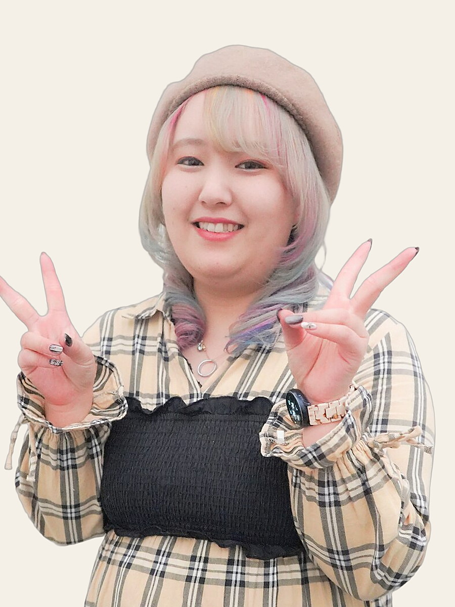
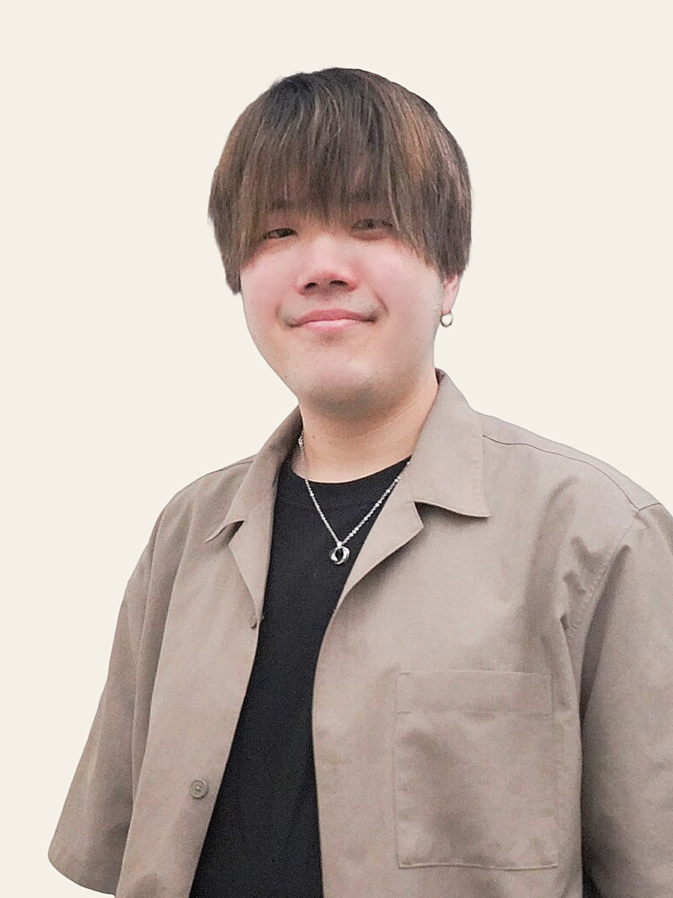
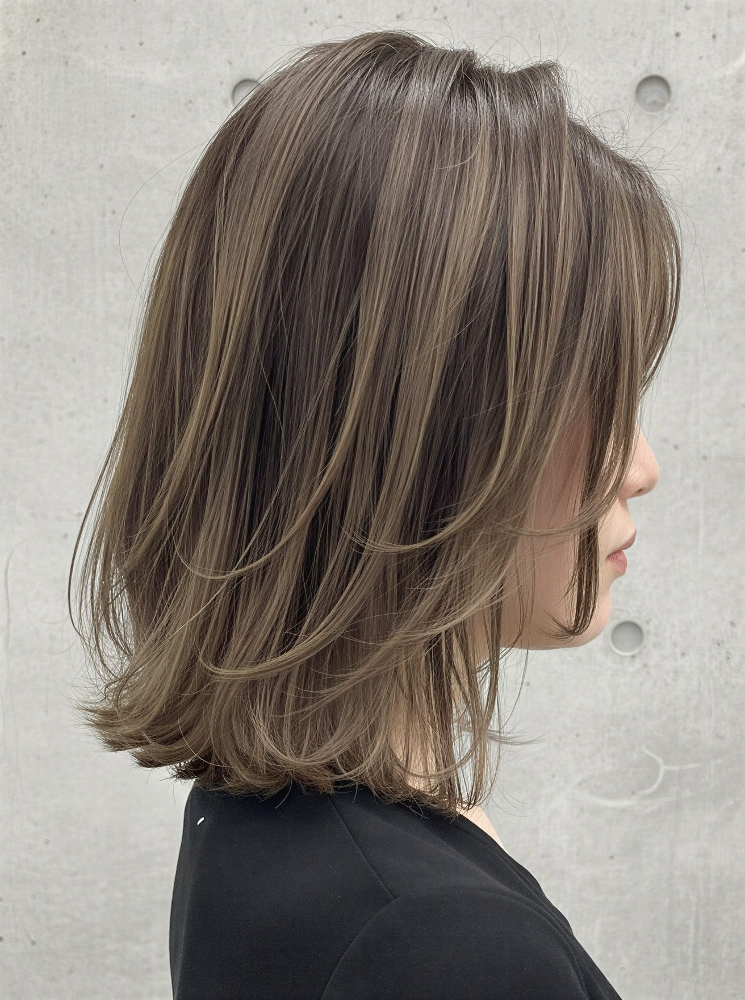
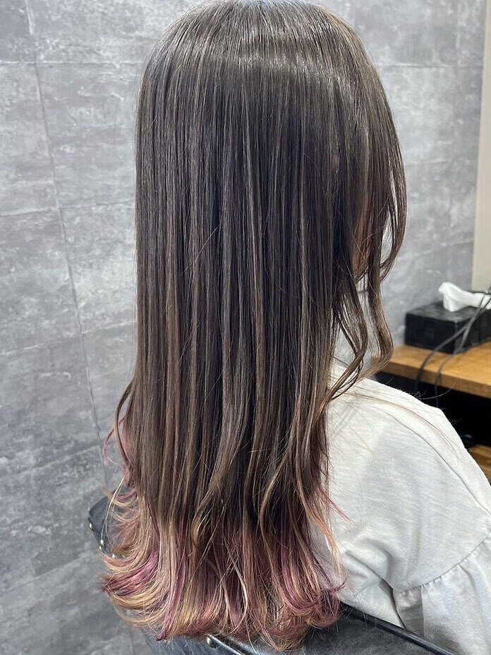
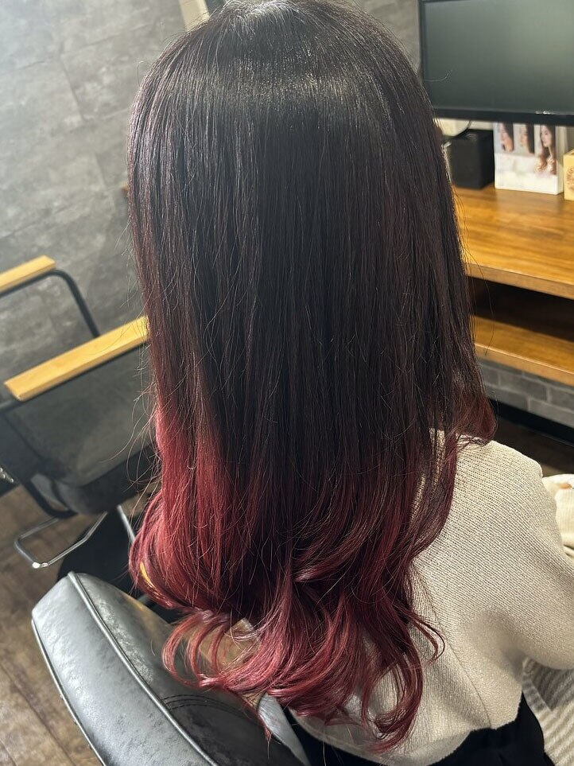
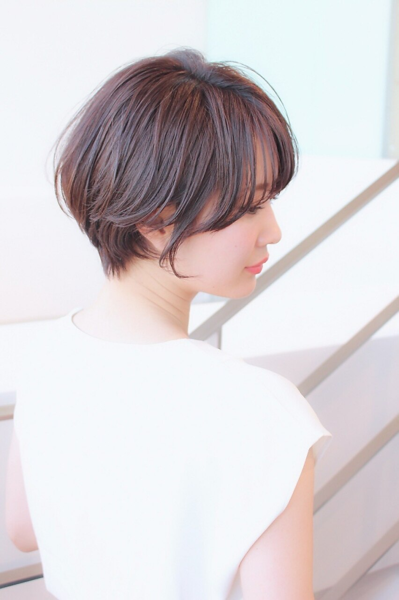
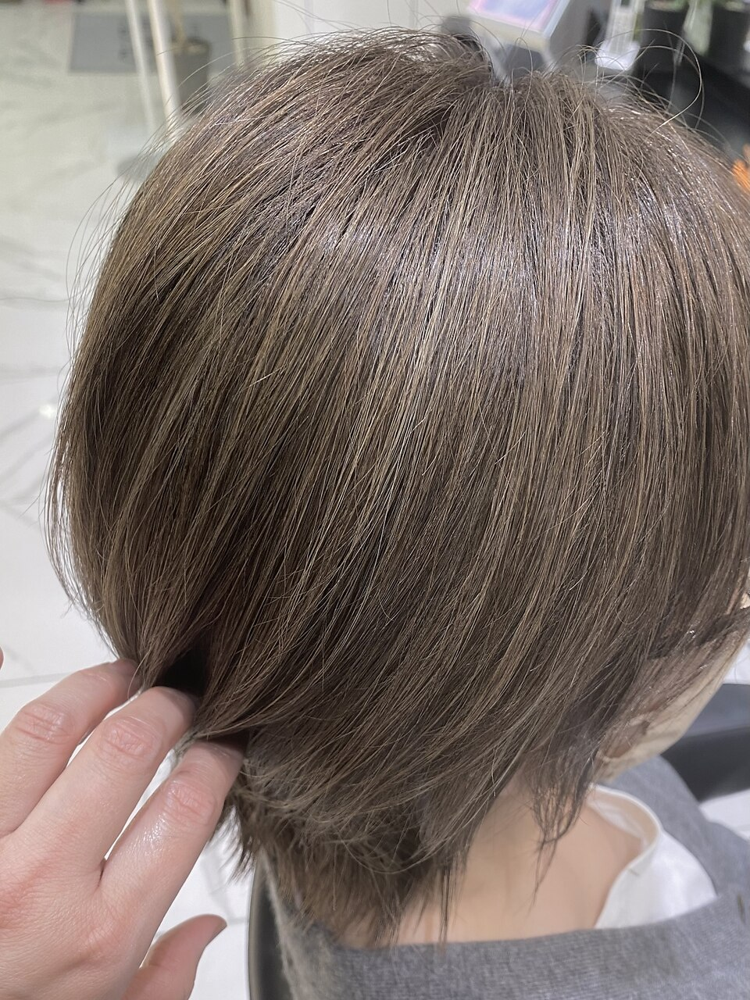

大森 彩加
和戸店|スタイリスト歴7年
ダブルカラー・デザインカラーが得意。透明感カラーのご相談もお任せください。
Color Diagnosis
お一人おひとりの肌の色・目の色から、肌映え・血色感を引き出す色味を見極める True Trust のカウンセリングです。un 下石田店では、小顔・細見え効果まで含めたスタイル提案とあわせて、自分史上最高に似合うスタイルをご提案します。
trois 須玉店では、丁寧なカウンセリングとパーソナルカラー診断で、ライフスタイルや骨格から一人ひとりに似合うヘアカラーを見極めています。「何気ない毎日も、髪色が変われば気分が変わる」— なりたいイメージが決まっていなくても、まずはご相談ください。
Menu
Price
| メニュー | 和戸店 | un 下石田店 | trois 須玉店 | chichi 竜王駅前店 |
|---|---|---|---|---|
| リタッチカラー(根元染め) | ¥6,600 | ¥6,600 | ¥6,600 | ¥5,500根元2cmまで |
| 全体カラー | ¥8,800透明感ボンドカラー | ¥8,800全体染め | ¥8,800〜美肌診断付 | ¥8,800デザインカラー全体染め |
| オーガニックカラー | ¥9,900 | ¥9,900 | ¥9,900 | ¥9,350 |
| ケアブリーチ | ¥13,200 | ¥13,200 | ¥13,200 | ¥9,900〜 |
| デザインカラー追加(ハイライト・インナーカラー等) | ¥4,400〜 | ¥4,400〜 | — | ¥4,950〜 |
| ヘナトリートメントカラー | — | ¥9,900 | — | — |
店舗ごとの詳しいメニューは各店舗ページへ: 和戸店 / un 下石田店 / trois 須玉店 / chichi 竜王駅前店
Stylist

和戸店|スタイリスト歴7年
ダブルカラー・デザインカラーが得意。透明感カラーのご相談もお任せください。
和戸店|スタイリスト歴7年
ハイトーン・くすみカラー、デザインカラーが得意です。

和戸店|スタイリスト歴8年
ホワイトカラーなどの特殊カラーと寒色系カラー、小顔カットが得意です。

trois 須玉店|スタイリスト歴3年
デザインカラー・透明感カラーが得意です。なりたいイメージをお聞かせください。
Style






FAQ
はい、カラーのみのご利用も歓迎です。カットを含まないメニューは、シャンプーブロー代を別途頂戴します(和戸店・trois 須玉店 ¥1,650/chichi 竜王駅前店 ¥1,100)。
いただきません。全店共通で、髪の長さによる追加料金はありません。
全店でご相談いただけます。特に un 下石田店は白髪ぼかしカラーのご相談が多く、和戸店・trois 須玉店もグレイカラー・白髪カバーを得意としています。
はい。新規のお客様には美肌カラー診断を実施し、肌の色・目の色から似合う色味をご提案します。なりたいイメージが曖昧でも、カウンセリングで丁寧にお伺いします。